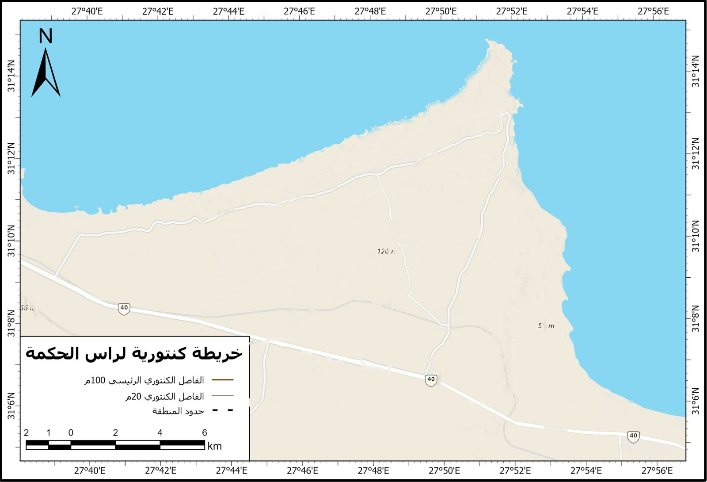
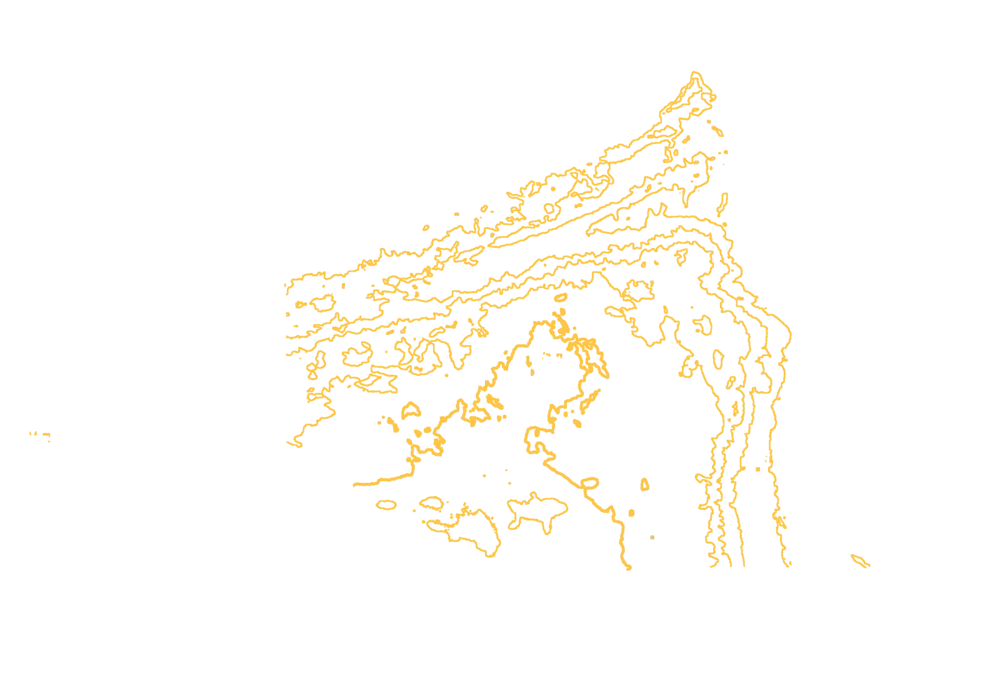
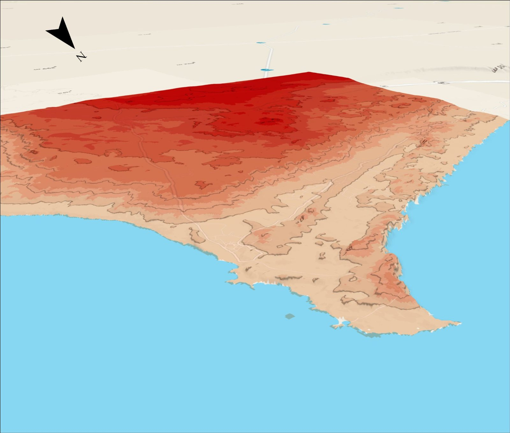
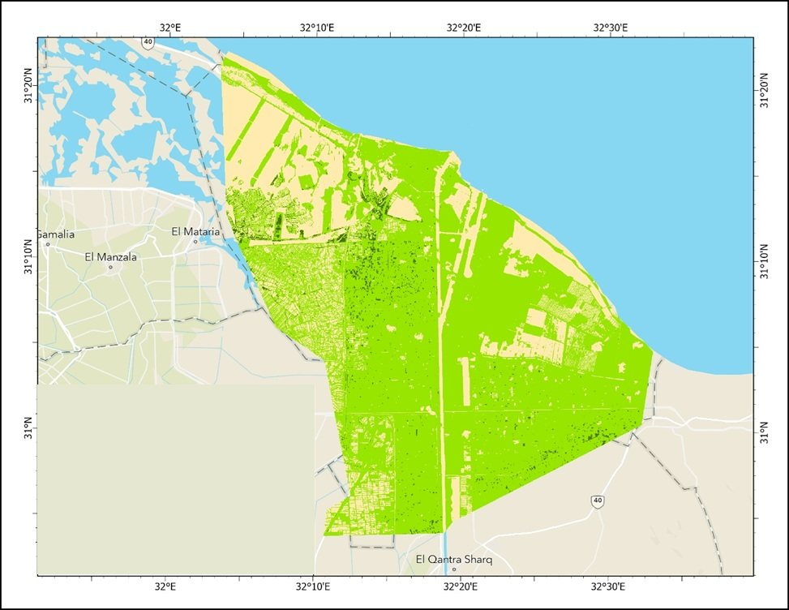
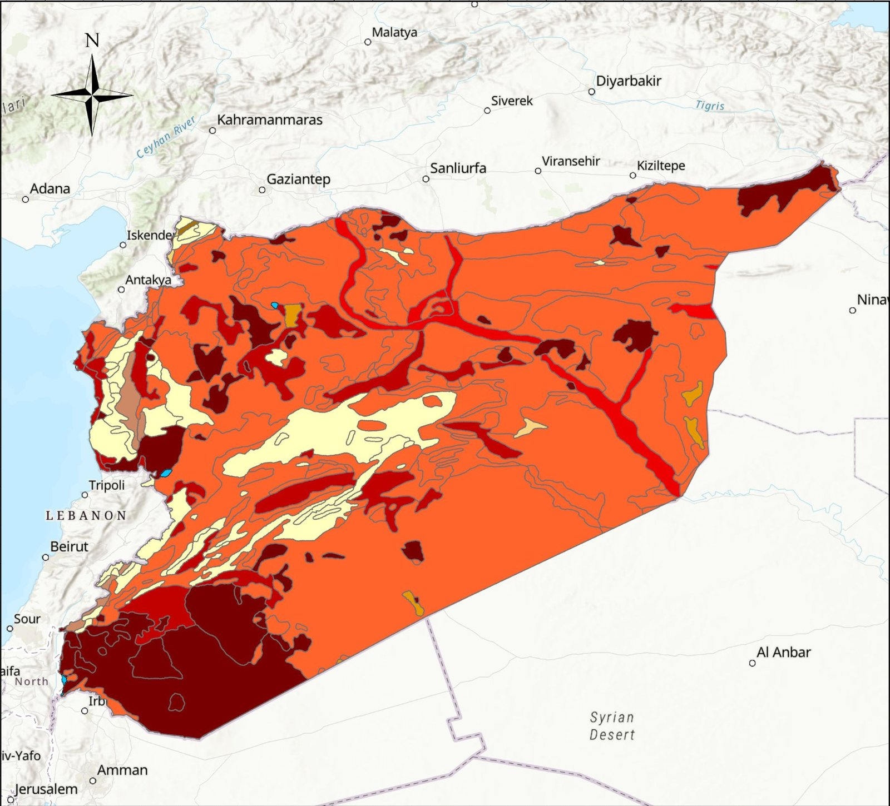
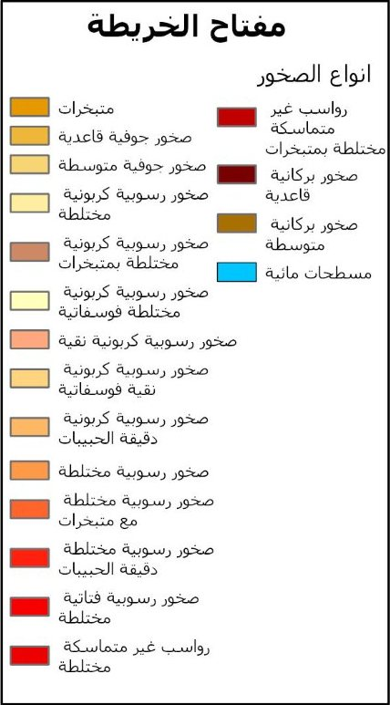
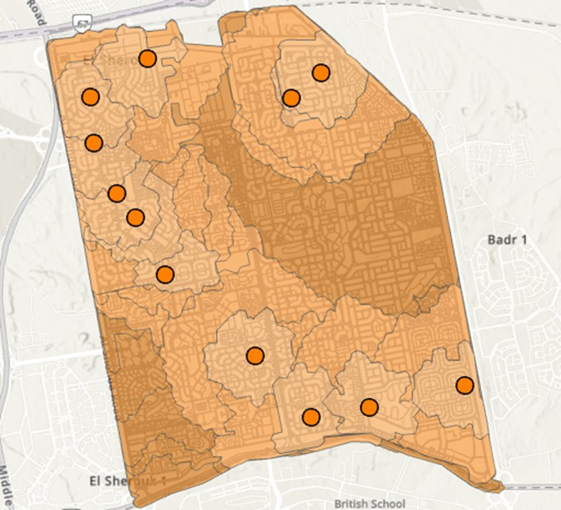

GIS · Remote Sensing · 3D LiDAR
Hi, I’m
Hi, I’m
Refat Hany
B.A. in GIS | RS, Cairo University. I turn satellite imagery and spatial data into maps that explain themselves.
- Terrain & DEM analysis
- 3D relief visualization
- NDVI vegetation analysis
- Geological mapping
- Service-area & route analysis
- 3D LiDAR data annotation
Terrain analysis · Ras El Hekma
Drawing the land, line by line
3D visualization · Ras El Hekma
Now the terrain stands up




Move your mouse to tilt the terrain
Vegetation analysis · Port Said
NDVI = (NIR − Red) / (NIR + Red)

Geological mapping · Syria
What lies beneath the surface


Service area analysis · El Shorouk
How far does each service reach?

Network analysis
Finding the optimal route
Thanks for flying with meLet’s map your